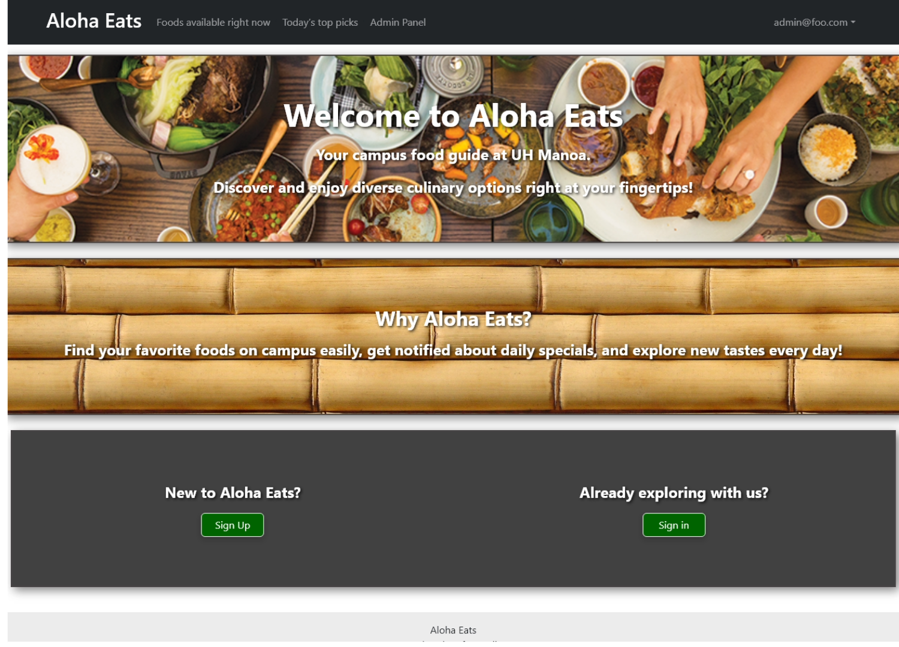
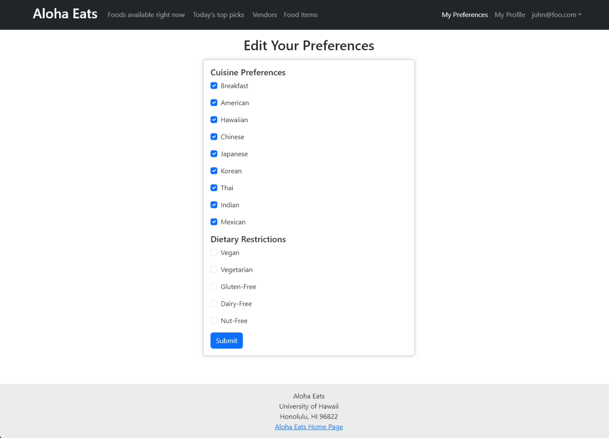

Aloha Eats
Overview
Aloha Eats is a web application designed for both vendors and customers in the food industry at UH Manoa. The application focuses on displaying various food items from different vendors, along with the capability for users to set their cuisine and dietary preferences.

Key Features
Food Item Management: Admin users have the ability to add, edit, or delete food items. Each food item includes details such as name, quantity, cuisine type, availability, and dietary options.
User Preferences: Users can set their cuisine and dietary preferences. These preferences are then used to filter the displayed food items, ensuring a personalized experience.

Vendor Management: Vendors can manage their information and food items. This includes editing details about their offerings and updating their menus.
Admin Panel: A dedicated admin panel is available for administrative tasks. Admins can manage vendor information, update food items, and set top picks for the day.

Map Integration: The application includes a map feature that shows the location of various vendors, enhancing the user experience by providing geographical context.
Filtered Views: Based on user preferences, the application filters food items. If no preferences are set, the app shows a broader range of items. This ensures that users see food items that align with their tastes and dietary restrictions.

User Account Management: Users can create accounts, log in, and manage their profiles. This includes setting preferences for cuisines and dietary restrictions. There is also a user profile page, where user’s can update their information and add an image.
My Contributions
Here is a summary of what I personally contributed to this project:
-
Pages: Designed and implemented the landing page, and initial implementations of the Foods Available Now, Top Picks, Vendor Home, Admin Home, My Preferences, and add/edit pages for vendors and admins.
-
User Authentication and Account Management: Implemented features for user registration, login, and preferences management, including handling vendor-specific information.
-
Food Item Management: Developed the functionality for admins to manage food items. This includes adding, editing, and deleting items, as well as marking certain items as top picks.
-
User Preferences System: You created a system where users can set their cuisine and dietary preferences. This involved handling user preferences data and ensuring these preferences influence the food items displayed to the user.
-
Admin Panel Development: Developed an admin panel where administrators can manage various aspects of the application, including user accounts, vendor information, and food items.
-
Filtered Views and Custom Queries: Worked on creating filtered views of food items based on user preferences. This involved writing custom queries and logic to filter food items according to user-set preferences.
-
Front-End Development: Front-end development using React.js, including creating various components like food items lists, vendor information, and user preferences forms.
-
Database Schema Design: Designed and defined the database schema for different collections: Foods, UserPreferences, and vendors, utilizing MongoDB and SimpleSchema.
-
Design Implementation: Implemented Bootstrap for responsive design, to make the application accessible and user-friendly across different devices.
-
Error Handling: Worked on error handling in various parts of the application, including form submissions and database operations.
-
User Experience: Made several enhancements to the user interface and experience, including adding confirmation messages, and refining page layouts.
source code: Project Page